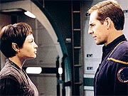
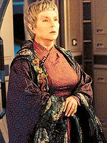
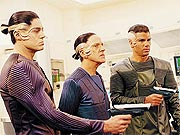
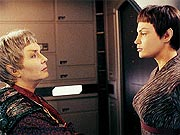
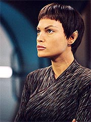
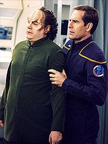
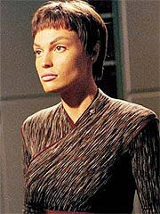

Episdio
anterior | Prximo
episdio
Sinopse:
Em um jantar, T'Pol comenta com
Archer e Tucker que ela tem a impresso de que a falta de
descanso --e de relaxamento da tenso sexual-- est prejudicando
os oficiais da nave. Embora Archer a princpio se sinta um pouco
constrangido com o comentrio, ele no faz oposio quando sua
primeiro-oficial j sugere encaminhar a Enterprise para Risa, um
planeta-resort que pode oferecer aos tripulantes o merecido
relaxamento.
A caminho do planeta, entretanto, Archer contatado pelo
almirante Forrest, com uma misso de emergncia: buscar uma
renomada embaixadora Vulcana no planeta Mazar e transport-la at
a nave Vulcana mais prxima. Archer tenta saber sobre o porqu
da pressa, mas Forrest diz que os Vulcanos no esto dando mais
detalhes. Como ordens so ordens, Archer, contrariado, muda o
curso para Mazar.

T'Pol faz todos
os preparativos para a minimizar o impacto da companhia humana
sofrido pela embaixadora, uma das inspiradoras da vida que a
oficial de cincias escolheu levar, mas todos se surpreendem
quando V'Lar se mostra muito vontade entre os humanos,
reproduzindo seus costumes e querendo aprender mais sobre sua
cultura.
Os Mazaritas, entretanto, pareciam mais do que ansiosos para se
livrar da diplomata. Ao comunicar o encaminhamento de V'Lar, o
oficial Mazarita revelou o porqu da sada s pressas da
embaixadora --ela acusada de corrupo e de trfico de influncia
nas altas esferas do governo Mazarita.
T'Pol claramente fica incomodada com a situao e, na primeira
oportunidade que tem, durante um jantar com a embaixadora, Archer
e Trip, ela pergunta sobre o plano de defesa de V'Lar. Quando a
diplomata revela que no pretende se defender, T'Pol interpreta o
ato como uma admisso de culpa e passa a hostilizar a
embaixadora. Incomodada, V'Lar decide ir a seus aposentos.

A
caminho, as duas tm uma conversa, em que V'Lar revela se
recordar de um encontro prvio com T'Pol, que marcou muito seu
modo de pensar sobre determinadas coisas. Com isso, as duas
acabaram voltando a se entender. V'Lar diz que no pode revelar
nada, mas que imperativo que ela seja levada at os Vulcanos.
As coisas ficam mais complicadas, entretanto, quando uma nave
Mazarita subitamente se apresenta prxima Enterprise, dizendo
ter ordens para levar a embaixadora de volta a Mazar. Quando
Archer afirma que precisa confirmar essas ordens com o Comando da
Frota Estelar, a nave Mazarita abre fogo contra a Enterprise. Graas
habilidade de Reed com os canhes de fase, a nave consegue
vencer a batalha, mas Archer fica preocupado.
Ele convoca V'Lar e a intima a revelar o porqu de ele ter de
colocar toda a sua tripulao em risco. Quando mais uma vez a
embaixadora se recusa a contar a verdade, Archer no tem escolha
seno mudar de curso e retornar a Mazar.
T'Pol volta a conversar com V'Lar, insistindo para que a
embaixadora confie nela e no capito Archer e revele os motivos
por trs de toda a confuso. A embaixadora resolve contar a
T'Pol parte do problema, mas no tudo, e pede que a
primeiro-oficial no revele nada a Archer.
T'Pol procura Archer e pede, como favor pessoal, que ele retome o
curso para a nave Vulcana e no devolva a embaixadora a Mazar,
onde ela ser morta. Archer fica sensibilizado pelo pedido de sua
oficial de cincias e acaba concordando.

Nisso a
Enterprise volta a encontrar trs naves Mazaritas. Archer inicia
uma fuga desesperada, o que leva a nave pela primeira vez a
atingir a dobra 5. Entretanto, os Mazaritas conseguem se superar e
deter a nave terrestre. Sem opo, Archer s pode torcer pela
chegada da nave Vulcana no ponto de encontro. Hoshi e V'Lar
trabalham para superar a interferncia gerada pelos Mazaritas e
conseguir mandar uma mensagem de socorro aos Vulcanos. Mas quando
a Enterprise fica deriva, os Mazaritas avisam que vo abordar
a nave.
V'Lar finalmente chama o capito em seu gabinete e revela o porqu
da corrida: ela estava agindo em favor do governo Mazarita, que
pediu o auxlio dos Vulcanos para investigar uma rede de corrupo
dentro das prprias esferas governamentais. V'Lar deveria prestar
depoimento poucas semanas depois, mas, para garantir sua segurana,
o governo decidiu simular sua extradio e lev-la em segurana
de volta a Vulcano, onde ela poderia esperar pela data marcada de
seu depoimento.
Agora, entretanto, com a Enterprise deriva, V'Lar decide se
entregar. Archer pede que ela confie nos humanos pelo menos uma
vez e v enfermaria em vez disso. Ele acha que pode ganhar
pelos menos uns dez minutos para que a ajuda Vulcana possa chegar.
Quando os Mazaritas desembarcam, Archer diz que at poderia
entregar V'Lar, mas a embaixadora foi ferida durante os ataques.
Ele diz que ela est na enfermaria e caminha com os invasores at
l, onde eles exigem que Phlox entregue a embaixadora. O mdico
diz que ela foi seriamente ferida e est em tratamento, no
podendo ser tirada da cmara sem ser morta. Quando ele se recusa,
os Mazaritas simplesmente metralham a cmara mdica.
Neste momento, a nave Vulcana Sh'Raan chega ao local, ordenando
que os Mazaritas baixem suas armas e deixem a Enterprise. Eles se
rendem, considerando sua misso cumprida, mas se surpreendem ao
descobrir que V'Lar nunca esteve na cmara mdica e est viva.
Derrotados, eles voltam para Mazar. A embaixadora Vulcana parte
para a Sh'Raan, mas no sem antes apontar os fortes laos de
amizade que esto emanando de Archer e T'Pol. Ao que parece, a
parceria entre humanos e Vulcanos pode mesmo ser bem-sucedida.
Comentrios:
"Fallen Hero" nem tem a histria mais
espetacular no mundo. Mas mesmo assim, graas ao bom uso de uma
das premissas bsicas da srie, torna-se um dos episdios mais
interessantes da temporada. Pela primeira vez vemos humanos e
Vulcanos legitimamente trabalhando juntos com uma meta comum, sem
esconderem uns dos outros interesses particulares. Depois de "Fallen
Hero", o sonho de uma Federao Unida de Planetas j
passa a ser concebvel, tendo por alicerces bsicos a Terra e
Vulcano.

Num nvel
mais particular, o episdio proporciona desenvolvimento e um
drama pessoal para T'Pol, que obrigada a confrontar a diferena
entre a imagem que ela fazia de uma de suas heronas pessoais e a
real personalidade e integridade da embaixadora V'Lar.
Os dois grandes temas do enredo principal tm um nico
catalisador: V'Lar. No surpreendente que o sucesso do episdio,
portanto, dependa da atuao da atriz convidada Fionnula
Flanagan. E, como em suas aparies anteriores no franchise, ela
no decepciona e entrega audincia uma interpretao
cativante da sbia embaixadora Vulcana. o primeiro personagem
Vulcano que simptico aos olhos da tripulao da Enterprise
(e, por consequncia, da audincia) e ainda assim mantm o
respeito em seu prprio mundo (diferentemente dos Vulcanos que
vimos em "Fusion").
A combinao de Flanagan e de um roteiro bem-escrito para a
personagem tornam a embaixadora V'Lar extremamente interessante, e
quase torcemos para que ela volte a aparecer no futuro, defendendo
uma maior integrao entre humanos e Vulcanos --o tema mais
interessante trabalhado pelo episdio.

A poro em que
ele se dedica a argumentar sobre a questo de "Heris
Decadentes" --no caso, da admirao de T'Pol por V'Lar, que
cai por terra depois que a embaixadora acaba dando a entender que
participou mesmo de um esquema de corrupo (algo que ela
efetivamente no fez)-- no particularmente brilhante. Na
verdade, bem previsvel. Entretanto, h um realmente
desenvolvimento para a Vulcana regular de Enterprise quando
ela decide abandonar o profissionalismo e pedir ao capito Archer
a salvao da embaixadora em termos pessoais.
Alm da interpretao extremamente efetiva de Jolene Blalock,
somos brindados com uma real evoluo para T'Pol e Archer,
enquanto amigos. O capito precisa superar de vez seu preconceito
e aceitar a amizade da Vulcana, e T'Pol responde tentando
convencer outros Vulcanos (no caso, V'Lar) da confiabilidade dos
humanos. Um elo realmente comea a ser forjado, e isso muito
bom para a srie (embora no fosse necessrio que a embaixadora
expressasse isso verbalmente no final, apontando a amizade de
Archer e T'Pol, o que tornou toda a situao um pouco gritante
demais para parecer natural).
Agora, claro que o pedao do episdio que mais empolga quando
vemos o desenrolar de uma operao legitimamente humana-Vulcana.
Torcer pela chegada da nave Vulcana, vibrar com a mensagem de
saudao deles e ver V'Lar deixando a Enterprise em bons termos
com a humanidade so coisas que agradam a audincia,
especialmente os telespectadores preocupados com a continuidade de
Jornada e com o entendimento de como os Vulcanos
"malvados" de ontem evoluram para os Vulcanos
"amiguinhos" de amanh. Esse o primeiro episdio a
verdadeiramente comear a responder a essa pergunta.
De resto, trata-se de um segmento notavelmente orientado a trama.
No um grande episdio para nenhum dos personagens, mas h
um belo destaque para a ao. Quem achava que as batalhas
espaciais de uma srie pr-Clssica seriam sonolentas vai ter
de repensar isso depois de ver este episdio. Toda a sequncia
da batalha dos Mazaritas com a Enterprise bem interessante, com
especial destaque para a excepcionalmente bem executada cena da
"chegada dobra cinco".

Archer
mostra mais capacidade que em segmentos anteriores, relembrando um
pouco sua sagacidade remanescente de "Broken
Bow" (alis, parece que o nico modo de realmente
acender nosso capito colocar uns Vulcanos por perto...). Sua
atuao cresce especialmente junto de Trip e T'Pol. O trio
realmente foi concebido imagem e semelhana do trio da Srie
Clssica, e at agora a ttica est funcionando.
Os demais tiveram aparies residuais interessantes, mas pouco
significativas para se tornarem mais do que mero cumprimento de
tabela. Os convidados Mazaritas tambm no trouxeram nada de
especial ao episdio.

O nico ponto
fraco de toda a histria justamente sua motivao ulterior
--a razo para a sada de V'Lar de Mazar. bem verdade que
at factvel que ela estivesse envolvida na tal investigao
de corrupo e que precisasse deixar Mazar para se proteger, at
o dia de seu depoimento. Entretanto, no havia nenhuma razo
para no revelar nada de sua misso tripulao da
Enterprise. A histria tambm nos deixa intrigados com relao
poltica de atuao dos Vulcanos para com outros mundos.
Eles defendem a no-interferncia com outras civilizaes, mas
j mostraram ter relaes intensas com os governos de Coridan ("Shadows
of P'Jem") e Mazar. Ser que eles vivem pelo mote
"faa o que digo, no faa o que eu fao"?
De toda forma, "Fallen Hero" uma bom episdio
da primeira temporada de Enterprise, que oferece algumas
respostas sobre a evoluo da humanidade e dos Vulcanos junto
comunidade interestelar. Suas qualidades facilmente superam os
defeitos.
Citaes:
Reed - "If you
must know, I prefer the shooting back part."
("Se quer saber, eu prefiro a parte em que respondemos
fogo.")
T'Pol - "If we expect to continue our relations with
humanity, we have to earn their trust."
("Se esperamos continuar nossas relaes com a humanidade,
precisamos ganhar sua confiana.")
Archer - "If youve learned anything about humans, youd
know --we dont always take the most logical course of action."
("Se voc aprendeu algo sobre os humanos, saberia --nem
sempre tomamos o curso mais lgico de ao.")
Tucker - "Please tell me youre ready to slow down."
("Por favor diga que est pronto para reduzir a
velocidade.")
Archer - "Its called a warp five engine!"
("Ele se chama motor de dobra cinco!")
Tucker - "On paper!"
("No papel!")
Archer - "If there was ever a time to start trusting us,
this would be it!"
("Se h um momento para comear a confiar em ns, esse
momento agora!")
Trivia:
 Fionnula Flanagan j fez duas aparies em Jornada. Em
uma delas, ela viveu Enina Tandro, no episdio de Deep Space
Nine "Dax".
Na outra ocasio, viveu a "me" de Data, Juliana O'Donnell-Soong-Tainer,
em "Inheritance", de A Nova Gerao.
Fionnula Flanagan j fez duas aparies em Jornada. Em
uma delas, ela viveu Enina Tandro, no episdio de Deep Space
Nine "Dax".
Na outra ocasio, viveu a "me" de Data, Juliana O'Donnell-Soong-Tainer,
em "Inheritance", de A Nova Gerao.
J. Michael Flynn j viveu Zayner, em "The Hunted",
de A Nova Gerao. John Rubinstein interpretou
anteriormente John Evansville, em "The 37's", de Voyager.
Vaughn Armstrong, que j teve onze papis ao longo das sries
de Jornada (trs deles em Enterprise), faz sua
quinta apario como o recorrente almirante Forrest.
Scott Bakula ficou animado de ter Flanagan no elenco do episdio.
"Pegamos Fionnula Flanagan como uma Vulcana, e ela tima.
Ela uma embaixadora, e como Indira Gandhi. Ela incrvel.
Ela tem essa coisa toda com T'Pol e comigo. um episdio muito
bom."
Ficha
tcnica:
Histria de Rick Berman
& Brannon Braga e
Chris Black
Roteiro de Alan Cross
Direo de Patrick
Norris
Exibido em 08/05/2002
Produo:
023